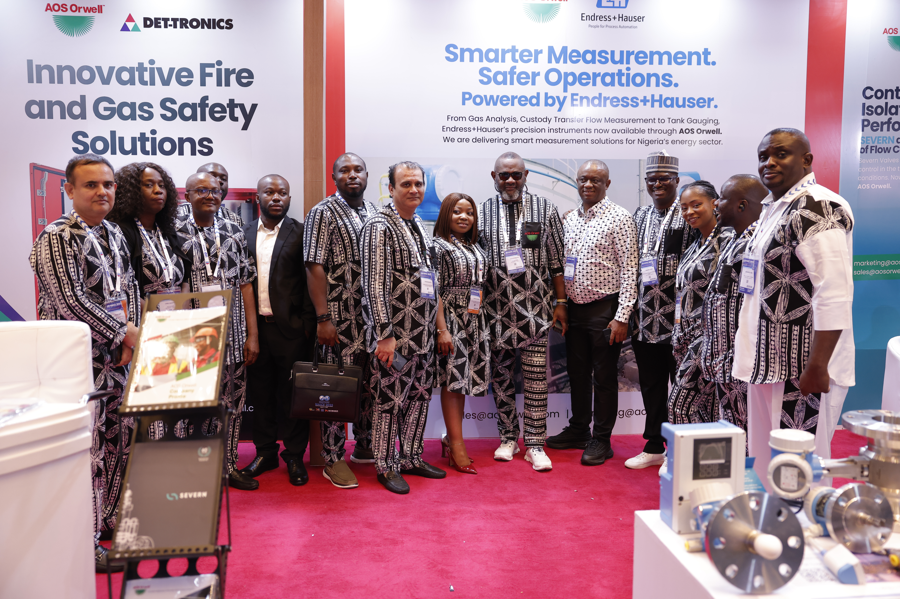

The AOS Orwell team at its SPE NAICE 2025 exhibition stand in Lagos, Nigeria.
At SPE NAICE 2025, AOS Orwell did more than exhibit. We created a space where ideas, technology, collaboration and new possibilities could come together.
Lagos, Nigeria — At this year’s Society of Petroleum Engineers Nigeria Annual International Conference and Exhibition, AOS Orwell created a hub of innovation, collaboration and possibilities.
From the first day, the stand drew a steady stream of visitors. Some came out of curiosity, while others arrived with clear objectives. All were interested in seeing what local strength and global standards look like in action.
The exhibition created an opportunity to move beyond introductions and build meaningful conversations around safety, efficiency, technology and the future of energy.
Bringing innovative solutions to life
The AOS Orwell stand featured live demonstrations that brought the company’s solutions and technology partnerships to life.
Visitors experienced precision-engineered valves from SEVERN, a fire and gas safety-system demonstration kit from Det-Tronics and Endress+Hauser instrumentation, including the popular Coriolis Flow Meter.
The stand also featured a demonstration switchgear from Schneider Electric. Each display became a starting point for conversations about performance, operational safety and the technologies shaping tomorrow’s operations.
Flow-control solutions
Precision-engineered SEVERN valves showcased reliable flow-control capability.
Fire and gas safety
Det-Tronics technology demonstrated integrated detection and safety capability.
Smarter measurement
Endress+Hauser instrumentation highlighted accurate and reliable process measurement.
Electrical systems
Schneider Electric switchgear demonstrated dependable electrical-distribution solutions.
A meeting point for industry leaders
The energy around the exhibition reached a high point on Day 3, when the AOS Orwell booth became a stop on the official Panel 2 VIP tour.
Industry leaders, speakers and decision-makers visited the stand, engaged with the AOS Orwell team and explored opportunities for collaboration and business growth.
Visitors also gained a firsthand understanding of the flow-measurement technology on display and how it can support safer, more efficient industrial operations.
SPE NAICE is more than an exhibition. It is where industry connections turn into partnerships. It is where we share not only what we do, but how we do it with commitment, expertise and a promise to meet customer demands.Akeem Ariyo, Managing Director, AOS Orwell
Moving from conversations to partnerships
The value of SPE NAICE extended beyond product demonstrations. The event created opportunities for direct engagement with clients, partners, prospects and stakeholders from across the energy industry.
These conversations allowed the AOS Orwell team to better understand current operating challenges, emerging requirements and areas where stronger partnerships can deliver measurable value.
By combining local experience with international technology partnerships, AOS Orwell continues to position itself as a reliable partner for operators seeking practical, high-performance solutions.
Leaving with renewed momentum
Three days later, the team left SPE NAICE with more than leads.
AOS Orwell left with renewed partnerships, shared visions and greater momentum to continue delivering solutions that work for Africa’s energy future.
The relationships strengthened at SPE NAICE 2025 reinforce the company’s commitment to innovation, customer engagement and long-term industry collaboration.
Explore solutions designed for Africa’s evolving energy industry
Speak with AOS Orwell about flow control, measurement, fire and gas safety, electrical systems and integrated project solutions.
Contact our team arrow_forward